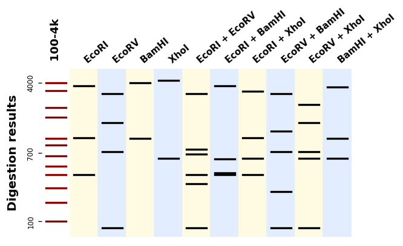

Digestions with mixed enzymes¶
"""Simple gel simulation with gelsimulation.py.
This example shows how to plot the the digestion patterns produced by different
restriction enzymes on a same DNA sequence.
"""
import itertools
from bandwagon import (BandsPattern, BandsPatternsSet, LADDER_100_to_4k,
compute_digestion_bands)
with open("example_sequence.txt", "r") as f:
sequence = f.read()
enzymes = "EcoRI", "EcoRV", "BamHI", "XhoI"
mixes = [[e] for e in enzymes] + list(itertools.combinations(enzymes, 2))
patterns = [
BandsPattern(compute_digestion_bands(sequence, mix, linear=True),
ladder=LADDER_100_to_4k, label=" + ".join(mix),
label_fontdict={"rotation": 40, "size": 9})
for mix in mixes
]
patterns_set = BandsPatternsSet(patterns=[LADDER_100_to_4k] + patterns,
ladder=LADDER_100_to_4k,
label="Digestion results", ladder_ticks=3)
ax = patterns_set.plot()
ax.figure.savefig("mixed_digestions.png", bbox_inches="tight", dpi=120)
